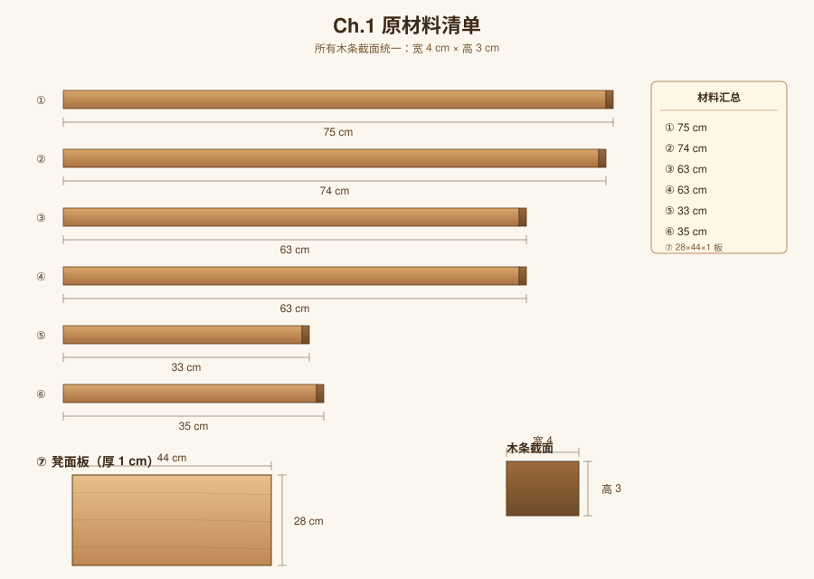
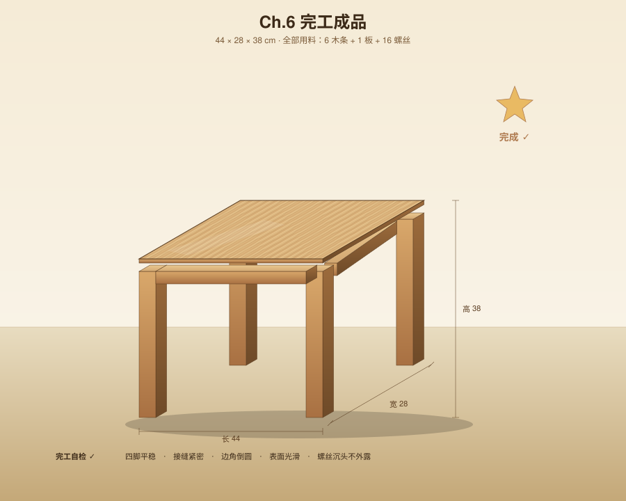

从 6 根木条到一张小板凳
完整的设计与制作记录 · 最终成品 44 × 28 × 38 cm
项目概览
本项目从一堆零散木料出发，记录如何把它们设计、切割、组装成一张稳固实用的小板凳。
初始材料：
- 6 根木条（截面 4 × 3 cm），长度分别为 75、74、63、63、33、35 cm
- 1 块木板，28 × 44 × 1 cm
章节导航
CH.01
原材料清单
盘点所有木条与木板的尺寸
CH.02
设计方案
立体效果图 + 三视图 + 设计参数
 CH.03
零件下料
每根木条如何切，切完得到哪些零件
CH.03
零件下料
每根木条如何切，切完得到哪些零件
 CH.04
五金 & 辅料
螺丝规格、数量、位置示意
CH.04
五金 & 辅料
螺丝规格、数量、位置示意
 CH.05
组装步骤
5 步：下料 → 拼框 → 装腿 → 装板 → 打磨上油
CH.05
组装步骤
5 步：下料 → 拼框 → 装腿 → 装板 → 打磨上油
 CH.06
完工成品
最终效果 + 自检清单 + 用料统计
CH.06
完工成品
最终效果 + 自检清单 + 用料统计


设计要点
- 对称布局：凳面板四周悬出围裙框各 4 cm，前后左右完全对称
- 稳固结构：四腿 + 矩形围裙框，胶 + 螺丝双重固定
- 用料经济：6 根木条全部派上用场，废料中尚有 2 段 27 cm 可备用
仓库
源码托管在 GitHub：grant3668/yisi